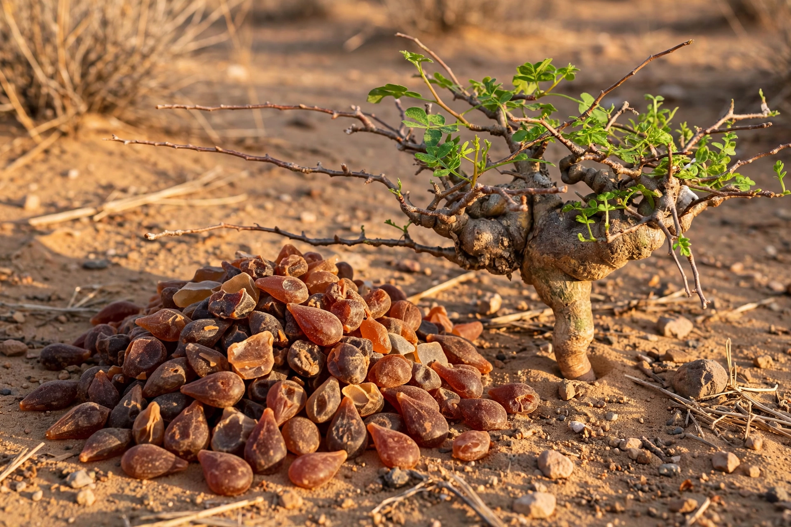

| Myrrh | |
|---|---|
 | |
| Source | Commiphora myrrha and related species |
| Region | Horn of Africa, Arabian Peninsula |
| Type | Oleogum resin |
| Uses | Incense, perfume, medicine, embalming |
Myrrh is a gum-resin extracted from a number of small, thorny tree species of the genus Commiphora, most notably Commiphora myrrha. The resin is obtained by wounding the trees: cuts are made through the bark into the sapwood, and the tree exudes a waxy resin that hardens into reddish-brown "tears". Myrrh was one of the most valuable trade goods of the ancient world, prized as an ingredient in incense, perfume, medicines, and embalming preparations.
Myrrh was traded along the Incense Route from southern Arabia and the Horn of Africa to the Mediterranean world. In ancient Egypt it was used in temple incense, in cosmetics, and in the mummification process. It is repeatedly mentioned in the Hebrew Bible, and in the Christian New Testament it appears among the gifts brought by the Magi to the infant Jesus, alongside gold and frankincense. Myrrh was also used as an anointing oil and was offered, mixed with wine, as an analgesic.
The principal producing regions today are Somalia, Ethiopia, Eritrea, and Oman (Dhofar). Harvesters tap the trees several times during the dry season; the exuded resin is collected after it hardens. Related resins from other Commiphora species, such as C. mukul (guggul) in India, are sometimes sold under similar names.
Myrrh is used in perfumery as a fixative and base note, in traditional medicine systems including Ayurveda and Chinese medicine, and in modern dental products such as mouthwashes, owing to its mildly antiseptic properties. It remains an ingredient in church incense in several Christian traditions.